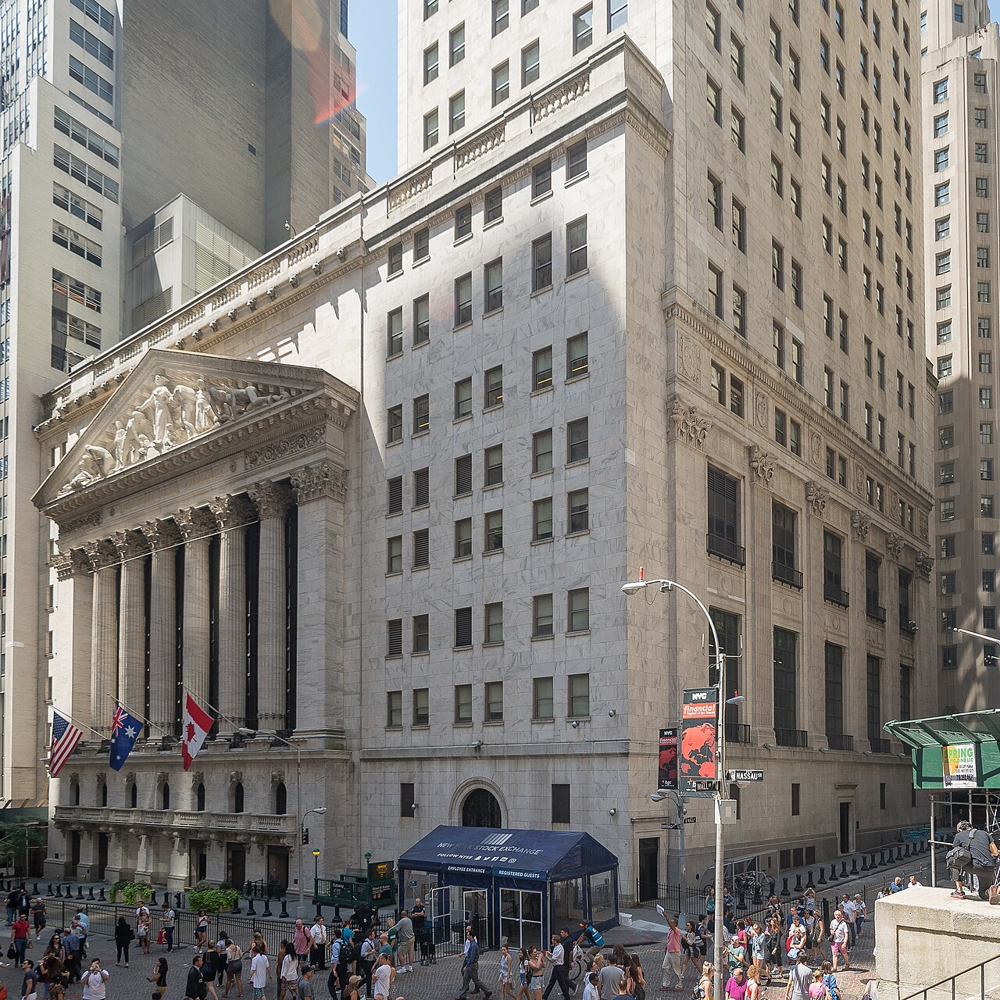
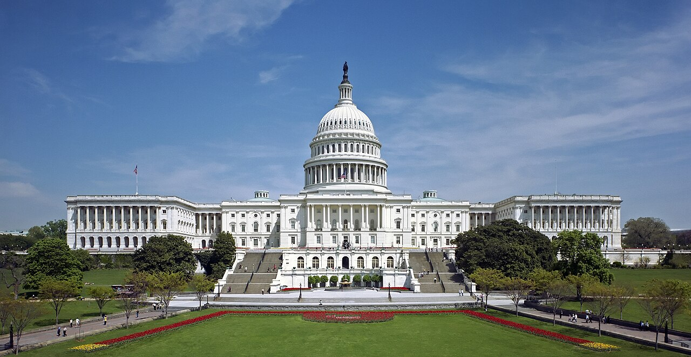

Vol. I · No. 43 · Tuesday, June 30, 2026 · 13 items · ~15 min read
The Supreme Court ends a 90-year-old limit on the president's power to fire agency heads, then carves out the Federal Reserve; Comcast splits itself in two; Washington and Tehran give dueling accounts of whether they are even talking; and Wall Street closes its strongest first half ever for stock sales.
The Splash · Law · Washington · cross-spectrum LLLCLRR
The Supreme Court frees the president to fire agency heads, ending a 90-year rule, then spares the Fed
The Roberts Court, which on June 29 overruled a 1935 precedent shielding independent-agency heads from removal while preserving the Federal Reserve's insulation. — Fred Schilling, Supreme Court / Wikimedia Commons
In a pair of rulings handed down Monday, June 29, the Supreme Court remade the president's power to fire. In Trump v. Slaughter, a 6-3 majority overruled Humphrey's ExecutorConceptThe 1935 Supreme Court precedent that let Congress shield independent-agency commissioners from at-will presidential removal. The Court overruled it on June 29., the 1935 decision that let Congress shield the heads of independent agencies from being dismissed except for cause. Chief Justice John RobertsPersonChief Justice of the United States since 2005. He wrote the Court's majority opinions in both the Slaughter and Cook rulings on June 29. wrote that the protection violated the separation of powers: "If anything more is left of Humphrey's, we overrule it." The case grew out of President Trump's 2025 firing of Democratic FTCInstitutionThe Federal Trade Commission, the multimember antitrust and consumer-protection agency at the center of the Slaughter case. Its commissioners had statutory for-cause removal protection. commissioner Rebecca Slaughter, but its logic reaches roughly two dozen multimember agencies, and commentators read it to extend to the SEC and CFTC.
Hours earlier, in Trump v. Cook, the same Court drew the line that matters most to markets. By 5-4, with Roberts joined by Justice Kavanaugh and the three liberals, it left in place an injunction keeping Federal Reserve governor Lisa CookPersonA Federal Reserve governor since 2023 and the first Black woman on the Board. Trump sought to remove her over pre-appointment mortgage-fraud allegations. in her seat. Roberts called an at-will reading "out of step with the statute Congress enacted and our Nation's tradition of central banking protected from political interference," treating the Fed as a deliberate exception to the rule he had just announced. The Court did not decide whether a Fed governor can ever be removed for cause, only that Cook was not afforded the required process.
Justice Sotomayor, dissenting in Slaughter with Justices Kagan and Jackson, called the majority "egregiously wrong" and warned it handed the president a power "unknown even to the English Crown." Justice Gorsuch, concurring, wanted to go further. Together the two rulings ratify a muscular reading of the unitary executiveConceptThe theory that the Constitution vests all executive power in the president, implying near-total authority to remove subordinate officials. The Slaughter ruling embraces it. while quarantining the central bank from it, a split that will define administrative law for a generation.
"Humphrey's has for decades been a result in search of a rationale."
— Chief Justice Roberts, majority opinion in Trump v. Slaughter, June 29
Corporate · Philadelphia
Comcast splits in two, spinning NBCUniversal and Sky into a separate public company
ComcastInstitutionThe cable and media conglomerate (Nasdaq: CMCSA) controlled by the Roberts family, owner of NBCUniversal, Sky, Peacock, and the Xfinity broadband business. said Monday, June 29, that it will separate into two public companies: a media company holding NBCUniversal and SkyInstitutionThe European pay-TV and broadband group Comcast acquired in 2018 for roughly $39 billion. It joins NBCUniversal in the new media company., the Universal studios, parks, and Peacock, and a connectivity company holding the Xfinity broadband, mobile, and pay-TV businesses. Co-CEO Brian Roberts, the controlling shareholder, will run neither but stay "actively involved"; Mike Cavanagh takes the media company and former finance chief Michael Angelakis the connectivity one. The spinoffConceptA separation in which a parent distributes a subsidiary's shares to existing holders, creating an independent public company, typically structured to be tax-free. is expected to take about a year.
It is Comcast's second structural break in two years, after carving its cable networks into VersantInstitutionThe company Comcast created by spinning off its cable-TV networks, now CNBC's parent. The 2024 split was a template for this one., now CNBC's parent. Roberts flatly denied the move is a setup for a sale ("Absolutely not"), but the market read it otherwise: Charter shares jumped about 10% on speculation of an eventual cable combination. The split lands amid a wave of media reshuffling, Fox's $22 billion deal for Roku, the Warner Bros. Discovery breakup, and frames each Comcast half as a cleaner target or acquirer.
News · Doha · cross-spectrum LLCR
The U.S. and Iran cannot agree on whether they are even meeting in Doha
Days after Iran struck U.S. bases in Kuwait and Bahrain and both sides stood down, President Trump said high-level talks would open in DohaPlaceThe capital of Qatar, a frequent venue for U.S.-Iran and regional diplomacy. It is the announced site of the disputed talks. on Tuesday, June 30, at Tehran's request, framing them as denuclearization negotiations and saying Iran had agreed not to pursue a weapon. Special envoys Steve WitkoffPersonPresident Trump's Middle East special envoy, leading the U.S. side of the Iran negotiations. He was reported to have arrived in Doha. and Jared Kushner were reported in Doha. Iran's foreign ministry then publicly denied any meeting with the United States was scheduled, saying its delegation had come to discuss roughly $6 billion in frozen assets and to meet Oman over the Strait of Hormuz, "with no relation to the U.S. visit."
The contradiction is the story. A 60-day interim framework signed earlier in June is still running, and President Masoud PezeshkianPersonThe president of Iran since 2024, a relative reformist. He says Iran will honor its commitments if Washington does the same. said Iran would honor its commitments "if Washington does the same." Oil eased toward a monthly decline as traders read the muddle as de-escalation by default rather than a breakthrough, even as Iran's inflation ran near 58%.
Artificial Intelligence
A state standardizes on one lab, and the chatbots reach the courthouse
AI · Sacramento
California becomes the first state to put Claude across every agency, at half price
California signed a statewide deal making Anthropic's Claude available to all state agencies, plus cities and counties, at a 50% discount. — Wikimedia Commons / Anthropic
Governor Gavin NewsomPersonThe governor of California, who has positioned the state as the lead U.S. actor on AI policy and government adoption ahead of a likely national run. announced Monday, June 29, that California has signed a "first-of-its-kind" partnership making AnthropicInstitutionThe AI lab behind the Claude models, recently valued near $965 billion and weighing a 2026 IPO. California is its first statewide government customer.'s Claude the first AI productivity tool available to every state agency, plus cities and counties, at a 50% discount with free workforce training thrown in. It is delivered through the state's new shared-services procurement portalConceptCalifornia's centralized buying channel that lets all agencies acquire vetted AI tools at one negotiated price, rather than each cutting its own contract., and is already live at the DMV, the Medicaid agency, and the offices running emergency response and state code security.
"AI should not replace the human work of government; it should help our workers move faster," Newsom said, with 33 of the top 50 U.S. AI companies based in the state. For a pre-IPO lab, locking in a government of California's scale is both a revenue anchor and a reference customer, the kind of institutional adoption that reshapes how every other state and vendor approaches the buy.
AI · Tallahassee & Austin
"Vibe lawyering" reaches the courts, and the courts start writing rules
A growing share of self-represented litigants are turning to AI chatbots for legal advice, flooding courts with fabricated citations and frivolous filings, a pattern The Economist on June 29 labeled "vibe lawyeringConceptA coinage for laypeople, or lawyers, relying on AI chatbots to generate legal arguments and filings, often producing invented case citations.." The judiciary is now responding in writing. The Florida Supreme CourtInstitutionFlorida's highest court. Its new rule, effective June 15, 2026, governs lawyers' use of generative AI and requires verification of AI-assisted citations. put an AI-citation rule into effect on June 15, and the Texas Supreme Court is weighing rules with possible sanctions for AI misuse, Law360 reported June 29.
The doctrine is forming case by case: a Texas business court recently held an AI chat log protected by attorney-client privilegeConceptThe rule shielding confidential lawyer-client communications from disclosure. A Texas court extended it to a log of AI-assisted legal work., and the ABA's Formal Opinion 523 addresses AI restrictions in engagement letters. For a profession Matthew is about to enter, the interesting question is no longer whether AI changes practice but how the rules of professional conduct are being rewritten in real time to absorb it.
Markets & Deals
A record half for new stock, and a broker comes to market
Corporate · New York
Wall Street books its biggest first half ever for stock sales, $251B and counting

U.S. equity issuance reached a record $251 billion through June 26, the strongest first half on record, led by SpaceX and Alphabet. — Wikimedia Commons / CC BY-SA
U.S. equity issuanceConceptThe total dollar value of new shares sold through IPOs, follow-on offerings, and convertibles. It is the headline measure of capital-markets activity. reached a record $251 billion through June 26, the strongest first half on record, Bloomberg data showed June 29. The tally was carried by a handful of giants, the record-setting SpaceXInstitutionElon Musk's rocket company, whose June IPO and follow-on debt sale were among the largest U.S. offerings of the year. debut and a large Alphabet sale chief among them, more than a broad reopening of the market.
Bankers said they expect heavy second-half deal flow, even as the dealmakers tracked in American Lawyer's running "Deal Watch," Cravath, Latham, Sidley, and Sullivan & Cromwell among the lead advisers, flagged macro worries: cracks in consumer confidence and a higher-for-longer cost of capital. The number is the clearest read on the ECMConceptEquity capital markets, the investment-banking function that originates and prices stock offerings. A record first half signals a robust issuance window. window heading into July, and it now opens onto a Court that just rewired the agencies that police it.
Corporate · Chicago
Hub International files confidentially for an IPO at a roughly $29B valuation
Hub InternationalInstitutionNorth America's largest insurance brokerage, founded in 1998 and grown through two decades of acquisitions. It is backed by the private-equity firm Hellman & Friedman., North America's largest insurance brokerage, has confidentially filed a draft registration statement for a U.S. IPO, the company disclosed around June 29, with the filing dated June 26. The deal would value the broker near $29 billion, the level set after a $1.6 billion minority round last year led by T. Rowe Price, Alpha Wave Global, and Temasek.
The confidential S-1ConceptA draft IPO registration filed privately with the SEC under the JOBS Act, letting an issuer refine disclosures and test demand before going public. route lets the company refine its numbers before going public, with proceeds expected to pay down debt from a two-decade roll-upConceptA growth strategy of acquiring many small companies in a fragmented industry, here insurance brokerages, to build scale. It typically loads the buyer with debt.. Backer Hellman & FriedmanInstitutionThe San Francisco private-equity firm and long-time controlling owner of Hub International, in line to monetize through the offering. stands to monetize a long hold; a market debut is floated for late 2026 or early 2027, potentially one of the largest financial-services IPOs in years.
Law & the Courts
A surprise lineup on the ballots, and the firms keep poaching
Law · Washington · cross-spectrum LLCLR
The Court upholds counting mail ballots postmarked by Election Day, 5-4

The Court's mail-ballot ruling lands roughly four months before the 2026 midterms, affecting grace-period rules in more than a dozen states. — Wikimedia Commons / Architect of the Capitol
In Watson v. Republican National Committee, decided June 29, the Court held 5-4 that federal "election day" statutes set a deadline for voting, not for ballot receipt, upholding Mississippi's rule counting mail ballots postmarked by Election Day and received within five days. The opinion came from a striking lineup: Justice Amy Coney BarrettPersonA Trump-appointed Justice. She wrote the Watson majority, joined by Chief Justice Roberts and the Court's three liberals., joined by Chief Justice Roberts and the three liberal justices. "The defining element of an 'election,'" Barrett wrote, "has always been the electorate's choice of a candidate," made "when voting is complete, not when ballots are received." The ruling reverses the Fifth Circuit.
Justice Alito dissented, joined by Justices Thomas and Gorsuch, with Kavanaugh joining most of it, arguing the historical meaning of "election" required completing the count on the day itself. The decision lands about four months before the 2026 midtermsConceptThe November 2026 congressional elections. The ruling preserves ballot grace periods used by more than a dozen states heading into them., and preserves ballot grace periodsConceptState rules counting mail ballots postmarked by Election Day but received afterward. Roughly 14 states and D.C. use them, plus more for military and overseas voters. in roughly fourteen states and D.C.
Law · New York
Kirkland poaches an antitrust boutique's founder as the firms keep reshuffling
Kirkland & EllisInstitutionThe highest-grossing law firm in the world by revenue, and an aggressive recruiter of lateral partners across practice areas., the highest-grossing firm in the world, hired antitrust partners John Harkrider and Craig Minerva from the boutique Axinn, Veltrop & Harkrider, where Harkrider is a name partner, in a move reported Monday, June 29. The lateral hireConceptRecruiting a partner, often with their client relationships, away from a rival firm. It is the main currency of competition and growth in BigLaw. is the latest in a churn that has run all summer alongside the 2026 pay war, with associate scales reset to $235,000 for first-years.
The throughline is what the firms believe about their own future. The chair of Baker BottsInstitutionA large Houston-founded law firm with deep energy and corporate practices. Its chair publicly bet that AI will strengthen, not replace, junior associates. told Bloomberg Law on June 29 that he plans to hire more associates, not fewer, betting that AI strengthens junior lawyers rather than replaces them, a direct rebuttal to the "AI hollows out the bottom of the pyramid" thesis. Meanwhile the new transatlantic giant formed by Ashurst and Perkins Coie unveiled its global pitch the same week. The market for legal talent is being repriced and restructured at once.
The World
A disaster turns political, and a framework cracks within days
News · Caracas · cross-spectrum LCLR
Venezuela's quake toll passes 1,700, and becomes the new government's first crisis
Caracas, among the areas hit by the June 24 twin earthquakes, where the death toll has climbed past 1,700. — Wikimedia Commons / CC BY-SA
The death toll from the June 24 twin earthquakesConceptTwo large quakes, magnitude 7.2 and 7.5, that struck western Venezuela seconds apart on June 24, the first weakening structures the second then toppled. in western Venezuela passed 1,700 by June 29, the UN and multiple outlets reported, with tens of thousands displaced and rescuers still pulling survivors from the rubble in what officials called the "critical hours." The figure has climbed steeply from roughly 920 earlier in the week. The disaster is the first major test for the U.S.-backed transitional government of President Delcy RodríguezPersonVenezuela's U.S.-backed interim president after Maduro's removal. The earthquake response is the first major crisis of her government., installed after Nicolás Maduro's removal.
The relief effort is already a fight. Survivors have jeered officials, and the government blocked a flight home for opposition leader María Corina MachadoPersonVenezuela's opposition leader and a Nobel Peace laureate, stranded in Panama. The interim government blocked her return to help quake victims., the Nobel Peace laureate, who said she was "willing to do whatever it takes" to return; Washington reportedly urged her not to rush. Washington is working to steady the alliance with Rodríguez even as the toll, and the politics around it, keep climbing.
News · Beirut · cross-spectrum CLR
The new Israel-Lebanon framework fractures within days as Hezbollah and Berri reject it
Five days after the United States, Israel, and Lebanon signed a framework in Washington tying an Israeli withdrawal to HezbollahInstitutionThe Iran-backed Lebanese Shia party and armed movement. It has flatly rejected the disarmament at the center of the new framework. disarmament, the deal is already coming apart. Lebanon's parliament speaker, Nabih BerriPersonLebanon's long-serving parliament speaker and a key Hezbollah ally, who publicly said the U.S.-brokered framework "will not pass.", a key Hezbollah ally, said the agreement "will not pass" and warned of national divisions, and Hezbollah has flatly rejected laying down its arms.
Analysts told Reuters on June 29 the framework "may entrench stalemate rather than end war," because "no Lebanese government has the power to enforce" disarmament. The sequence, a signed deal Friday, a rejection within days, fits the now-familiar rhythm of the 2026 Lebanon war, in which diplomacy and strikes run in parallel rather than in sequence, and tests whether Washington's framework can survive contact with the Taif orderConceptLebanon's 1989 power-sharing settlement that ended its civil war. Arab commentators argue the new framework upends it. it implicitly rewrites.
Entertainment & EASL
A studio reckoning at the fiscal bell, and a copyright fight over a cartoon
Culture · Redmond
Microsoft moves to shut Xbox studios at the fiscal bell, and its union pushes back
Microsoft is reported to be planning studio closures timed to its June 30 fiscal year-end, with several first-party studios named at risk. — Wikimedia Commons / Microsoft
Microsoft is preparing another round of XboxInstitutionMicrosoft's gaming division, which owns dozens of studios after the ZeniMax and Activision Blizzard acquisitions and has cut staff repeatedly in 2025-26. layoffs and studio shutdowns timed to its fiscal year-endConceptThe close of Microsoft's accounting year on June 30, a common point for restructuring decisions. The reported cuts are tied to that date. on June 30, according to reporting that intensified June 29. Four first-party studios were named at risk: Double Fine, Undead LabsInstitutionThe Seattle studio behind the State of Decay series, with State of Decay 3 due in 2027. Roughly 110 jobs are reported at risk., Compulsion Games, and Ninja Theory, with the company said to be negotiating buy-outs or outside buyers as the only path to spare them.
The labor side has organized. Unionized Microsoft game workers, represented by the CWAInstitutionThe Communications Workers of America, which represents organized Microsoft and ZeniMax game workers and is pressing for layoff protections., publicly demanded layoff protections ahead of the cuts, turning the closures into a test of the contracts game workers have only recently won. For all the prestige in the names, Ninja Theory's Hellblade, Double Fine's catalog, the story is the economics: even the largest owner in gaming is pruning studios to hit a date on a calendar.
Culture · Los Angeles
"Migration" draws an idea-theft suit against Illumination, Universal, and Mike White
A San Diego screenwriter, Kenneth Giavara, has filed a federal copyright suit against IlluminationInstitutionThe animation studio behind Despicable Me, the Minions films, and Migration, with films distributed by Universal Pictures., Universal Pictures, and screenwriter Mike WhitePersonThe screenwriter of Migration and creator of HBO's The White Lotus, named as a defendant in the idea-theft suit., alleging the 2023 animated hit Migration, which grossed roughly $300 million, lifted protected material from his award-winning screenplay, the Hollywood Reporter reported June 29. The complaint is a classic substantial-similarityConceptThe test in copyright law for whether a later work copied protected expression, rather than unprotectable ideas, from an earlier one. claim.
The suit lands just ahead of a new Minions release, a timing detail that gives it leverage, and joins a thickening docket of AI-and-IP and idea-theft litigation against the studios. These cases rarely make it to a jury, but they are where the line between an unprotectable idea and protected expression actually gets drawn, the doctrine that governs every pitch in Hollywood.
Compiled by Matthew Yellin · mattyellin.com · Est. May 2026 · A cross-spectrum brief drawn each morning from wires, filings, and the trade press